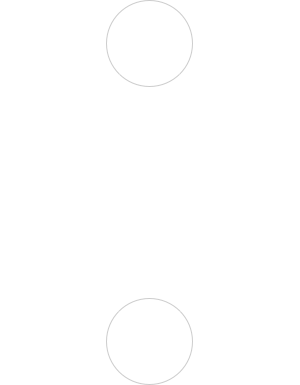

От человека к пространству
Метод, который устанавливает связь человека и интерьера. Открывает твою исключительность и становится базой для проектирования твоей будущей жизненной среды.
БИОГРАФИКА ≠ дизайн интерьера. Это не проектирование. Это исследование личности. Как ты чувствуешь, мыслишь, действуешь. Исследование твоей аутентичности для создания будущей реальности, в которой ты счастлив.
фокус на человеке
Ты — центр исследования.
Твои привычки, образ жизни, опыт, интуитивные и рациональные выборы собираются в цельную систему.
Индивидуальность
Нет шаблонов. Каждый результат уникален, как отпечаток личности. Биографика отражает твой внутренний код.
Интегративность
Метод объединяет: дизайн, функциональность, психологию личности, культуру, эстетику, телесность, художественные смыслы, повседневные ритуалы
Практичность
Исследование не ради исследования. Оно создает основу, на которой интерьер будет жить и оставаться актуальным спустя многие годы. Этот этап экономит время и средства, исключая ошибки и лишние расходы в проектировании.
Честность и легкость
Без давления и клише.
Погружение происходит естественно – с уважением, поддержкой, в диалоге и сотрудничестве.
Этот метод для тебя, если
Ты ищешь не шаблон, а персональное решение
Хочешь, чтобы пространство отражало твою личность, привычки и ценности.
Тебе нужна ясность перед ремонтом
Предпочитаешь сначала понять направление и запрос к пространству, а потом переходить к дизайну и реализации.
Не хочешь упустить важное
На этапе БиоГрафики ты обдумываешь и проживаешь каждый момент на каждом квадратном метре
Ты готов к диалогу
У тебя есть время и желание размышлять, обсуждать, открываться, ты чувствуешь интерес к самоисследованию.
Ценишь долгосрочное проектирование
Решения, найденные в методе БиоГрафика, учитывают будущие сценарии твоей жизни и закрывают потребности надолго.
Хочешь, чтобы дом поддерживал тебя
Интерьер становится не просто красивым, а таким, в котором ты отдыхаешь, вдохновляешься, становишься продуктивным и чувствуешь себя на своём месте.

БИОГРАФИКА дает возможность представить свой будущий дом в деталях, соединить потребность с функциональным решением
Этапы создания БиоГрафики. Путь к интерьеру мечты
Здесь начинается путь. В формате интервью мы погружаемся в твой образ жизни, привычки, прошлый опыт отношений с пространством, желания, потребности. Оцениваем и касаемся различных сфер: от восприятий и воображения до физиологии и состояний.
Это этап работы, в котором я анализирую полученные данные. Здесь конструирую твою подробную аутентичную карту в призме связи с пространством. Здесь рождаются архетипы. Проверяю гипотезы и формирую общее видение. Появляется образ тебя, как хозяина будущего дома.
Здесь я знакомлю тебя с промежуточными выводами, получаю обратную связь и работаю с твоим откликом. Вместе корректируем, дополняем, углубляем.
Здесь ты получаешь итог работы. Альбом, в котором ты увидишь свою личностную структуру через метод БиоГрафики. Здесь собраны все выводы исследования. Передаю их в формате живой встречи, на которой комментирую каждый элемент, даю дополнительные рекомендации и говорю о том, как грамотно это использовать. Вместе резюмируем всю проделанную работу.
Если твой запрос на БиоГрафику и изменения пространства связан с уже существующим интерьером мы перекладываем и адаптируем на него итоги исследования. Нам потребуется еще одна встреча, в которой, мы ищем точки изменений и преобразований: функциональных, визуальных, чувственных.
Персональную презентацию по методу БиоГрафики
- Анализ исходной точки и запроса
- Типы взаимодействий с пространством
- Карта видимых и скрытых привычек
- Линия личного опыта: прошлое — настоящее — будущее
- Матрица архетипов, их визуальное прочтение
- Функциональный трэк-график решений
- Визуальная галерея
- Рекомендации по реализации и дальнейшему использованию БиоГрафики
а еще получаешь Свежий взгляд на привычное и Удовольствие от самоисследования
Форматы работы
БиоГрафика среды
Исследование + презентация- 3 встречи (онлайн/офлайн)
- Результат: персональный альбом
- Цена от 120 000 рублей
Ты можешь использовать его самостоятельно, передать дизайнеру или продолжить работу по проектированию со мной на основе результата метода.
ЗаказатьБиоГрафика среды + Дизайн-проект
Исследование + презентация + адаптация + проектирование- Полный цикл: от исследование до готового дизайн-проекта
- Цена от 7500 рублей/м2
Ты получаешь дизайн-проект своего жилого пространства на основании твоей Биографики.
ЗаказатьБиоГрафика среды + Кураторство
Исследование + адаптация + ведение проектной группы- Цена от 40000 рублей в месяц
Пакет подходит, если ты живёшь в другом городе или работаешь с командой. Также, подходит для компаний, реализующих проекты общественных пространств.
Заказать
О проводнике
- 15 лет в дизайне и проектировании
- 100+ реализованных проектов от Comfort до Deluxe класса
- 10 лет управления собственной студией
- Частные и общественные пространства
- Сотрудничество с девелоперскими компаниями
FAQ
Метод даёт понимание, кто вы и что вам нужно, прежде чем начинать ремонт. Это экономит ресурсы и формирует прочную основу для проекта.
В приоритете всегда живые встречи — именно в личном контакте лучше всего раскрываются детали. Но если очная работа невозможна, процесс может проходить и онлайн: мы используем видеозвонки, анкеты и дополнительные инструменты, чтобы сохранить глубину исследования.
Альбом создан так, чтобы вы могли использовать его самостоятельно или передать любому дизайнеру. Там есть все ориентиры, и при желании можно обратиться ко мне за кураторством.
Да. В альбоме есть практические советы, подбор материалов и структура, по которой вы сможете двигаться самостоятельно.
На каждом этапе есть обратная связь. Мы ищем решения вместе, поэтому финальный результат всегда согласован и отражает вас.
3 живые встречи занимают по 2-3 часа каждая, остальная часть работы лежит на мне. На создание альбома со всеми материалами и расшифровкой Кода уходит до 3 недель.
Контакты
Если вам откликается этот подход, напишите, чтобы обсудить детали.